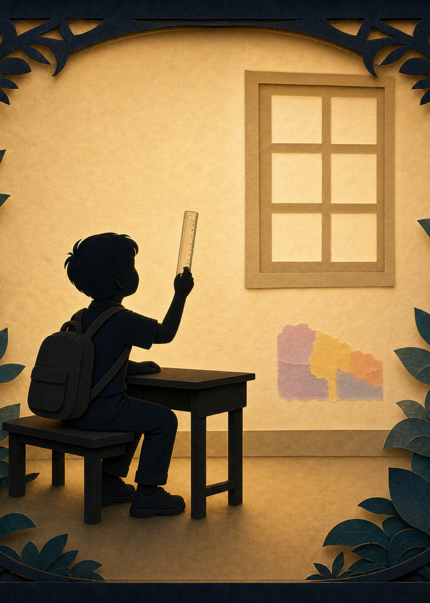
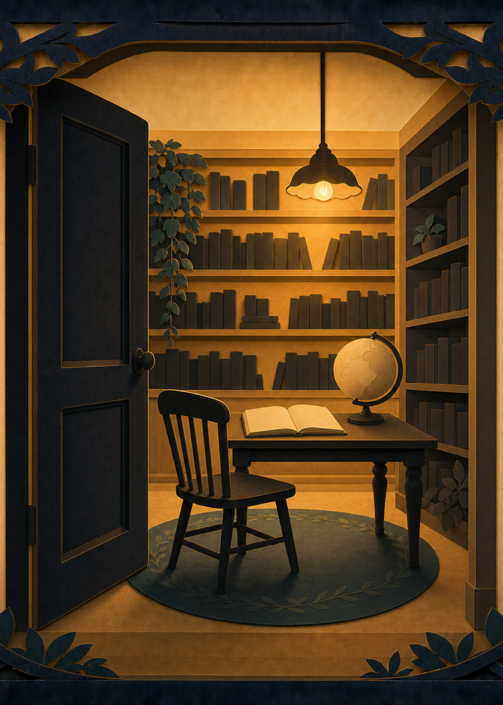

Everyone was right. The answer was still wrong.
A slide said the noon sun comes from the south. A boy's plastic ruler, on the wall that should have had no sun at all, said otherwise — every single morning. Only one kid looked twice. What she found was a whole town, quietly certain, that had stopped checking. This is where the myth begins: not with a hero, with a question nobody wanted asked.
a Mahanu project · fantasy on purpose, science on the record · a comic book in the makingProject badges
Editors read every page before it publishes.
Read the review →
Claude Opus 4.8 — reviewed against the book's canon and science.
Read the prompt →
Selected public data only. Full Mahanu data stays private in member vaults.

Page 1

Page 2

Page 3

Page 4
Read the story — three chapters
One week in June. A wrong slide, a dying garden, a locked study, a spark that shouldn't exist, and four kids who could not let it go. About 40 minutes across three chapters.

Chapter 1 — The Rainbow on the Wrong Wall
A rainbow on the wall the sun can't reach · the anomaly
The textbook swears the noon sun comes from the south. So why does a boy's plastic ruler set the wrong wall — the north one — ablaze with colour every morning? Only one kid ever looked up.
Read chapter →
Chapter 2 — The House of Open Questions
The man who never once closed a question · the house
A gate the whole city knows; a man it has forgotten. In his locked study, every note the great mind ever finished ends the same impossible way — never an answer, always a door left open.
Read chapter →
Chapter 3 — The Spark And The Forgotten Ledger
A firefly that was never a firefly · the spark
It rests on an open book, steady and yellow. Four kids lean in — and it's gone. Not flown off. Gone. Then they find it again, printed into a woodcut a hundred years old.
Read chapter →Now start yours.
Every project begins with a question you couldn't let go. Mahanu gives it a home — files you own, people who show up.
Start your own project ✦